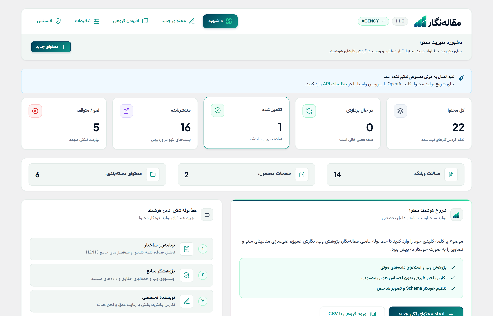
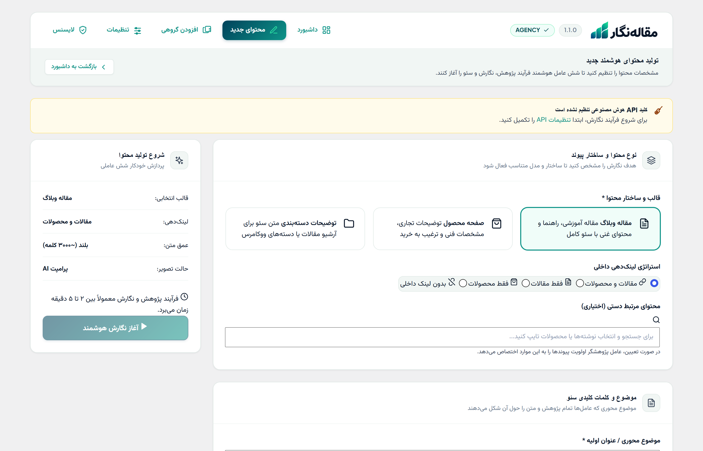

تحریریه ۶ عاملی هوش مصنوعی
در پیشخوان وردپرس شما
مجموعهای بینظیر از ۶ عامل هوشمند تخصصی جهت نگارش مقاله، توضیحات ووکامرس، صفحات دستهبندی، سئوی خودکار و بومیسازی لحن برند مستقیماً روی سرور شما.
پیشنمایش زنده و تور کامل پنل افزونه مقالهنگار
با کلیک روی هر بخش، عملکرد واقعی، امکانات فنی و اسکرینشات اختصاصی آن تب از پنل را به صورت تعاملی مشاهده کنید.

تحلیل و آمار هوشمند
گزارشگیری لحظهای- ✓ نمایش آمار کل محتواها، مقالات و محصولات
- ✓ تفکیک مقالات در حال پردازش، تکمیلشده و لغو شده
- ✓ سنجش تعداد دستهبندیهای ساختهشده
مانیتورینگ ۶ عامل
هدایت خط تولید- ✓ مشاهده وضعیت زنده برنامهریز و پژوهشگر
- ✓ نظارت بر قلم نویسنده، منتقد و انسانیساز
- ✓ کنترل خودکار ناشر سئو قبل از انتشار
مدیریت مطالب آماده
بازبینی و انتشار- ✓ نمایش دقیق حجم متن (تعداد کلمات) و تاریخ نگارش
- ✓ امکان بازبینی متن قبل از قرارگیری روی وبسایت
- ✓ انتشار یککلیکی مستقیم در پیشخوان وردپرس

سئو و لینکدهی داخلی
تقویت بنسازه سایت- ✓ تعیین کلمه کلیدی اصلی (Focus Keyword) و ثانویه
- ✓ اتصال خودکار متن جدید به مقالات و محصولات مرتبط
- ✓ پر شدن اتوماتیک فیلدهای Yoast SEO و Rank Math
تنظیمات نگارش و لحن
شخصیسازی کامل- ✓ انتخاب زبان فارسی و لحنهای ۴ گانه برند
- ✓ تعیین طول محتوا (کوتاه، متوسط، بلند تا ۵۰۰۰ کلمه)
- ✓ معرفی مقاله مرجع برای الهام از ساختار محتوایی
مولد اختصاصی تصویر AI
تصویرسازی بدون طراح- ✓ ساخت خودکار تصویر شاخص و تصاویر درونمتنی
- ✓ انتخاب سبکهای رئالیستی، ادیتوریال و ۳بعدی
- ✓ تولید پرومپتهای انگلیسی هوشمند بر اساس موضوع

ورود دستی ردیفها
مدیریت ردیفی کلمات- ✓ اضافه کردن ردیفهای کلمات کلیدی با یک کلیک
- ✓ تنظیم لحن، طول متن و حالت تصویر برای هر ردیف
- ✓ تعیین تاریخ انتشار شمسی دلخواه برای هر ردیف
آپلود فایل اکسل
ورود صدها عنوان یکجا- ✓ دانلود قالب استاندارد آماده اکسل
- ✓ آپلود فایلهای XLSX و CSV با حجم بالا
- ✓ پردازش خودکار و بدون خطا در پسزمینه
صف انتشار خودکار
مدیریت منابع سرور- ✓ تولید تدریجی و نوبتی مقالات بدون افت سرعت هاست
- ✓ گزارش مقالات در صف، در حال پردازش و تمامشده
- ✓ حفظ الگوی طبیعی انتشار در چشم گوگل

شناخت پرسونای مخاطب
ICP & Pain Points- ✓ آموزش هوش مصنوعی برای شناخت دقیق مشتری هدف
- ✓ تحلیل دغدغهها و مشکلات اصلی خریداران
- ✓ نگارش متون پاسخگو به سوالات واقعی مشتری
لحن صدا (Brand Voice)
یکپارچگی قلم برند- ✓ تعریف لحن اختصاصی برند (حرفهای، علمی، صمیمی)
- ✓ ثبت دستورالعملهای نگارشی و کوتاهنویسی
- ✓ حفظ سبک قلم یکسان در تمام صفحات سایت
ارزش پیشنهادی و رقبا
Value Proposition- ✓ ثبت مزایای اصلی رقابتی محصول یا خدمات شما
- ✓ تحلیل و ذکر متمایزکنندههای شما نسبت به رقبا
- ✓ ترغیب مخاطب به خرید و افزایش نرخ تبدیل
تولید محتوا با ابزارهای معمولی چرا کافی نیست؟
- متنهای خشک و رباتیک که نیاز به ساعتها ویرایش مجدد دارند
- شناسایی محتوا توسط گوگل به عنوان هوش مصنوعی غیرانسانی و افت رتبه
- عدم اتصال به پیشخوان وردپرس و اتلاف وقت در کپیپیست دستی
- پر نشدن متادادههای سئو (عنوان، دسکریپشن و کلمه کلیدی) در Yoast و Rank Math
مقالهنگار یک تیم کامل تحریریه است
- ۶ عامل تخصصی هوش مصنوعی به صورت همزمان روی هر مقاله کار میکنند
- عامل انسانیساز (Humanizer) لحن رباتیک را کاملاً حذف میکند
- هماهنگی اتوماتیک با افزونههای سئوی Yoast SEO و Rank Math
- تولید انبوه با فایل اکسل یا ورود دستی صدها کلمه کلیدی یکجا
۶ عامل تخصصی هوش مصنوعی چگونه کار میکنند؟
هر محتوا قبل از انتشار از یک خط تولید ۶ مرحلهای عبور میکند. هر عامل وظیفهای مشخص و تخصصیافته دارد.
۱. استراتژیست
تحلیل کلمه کلیدی، ترسیم درخت محتوا و طراحی دقیق سرفصلهای اصلی و فرعی (H2 & H3).
۲. پژوهشگر
استخراج آمار، فکتهای معتبر و اطلاعات کاربردی مرتبط با موضوع برای غنیسازی متن.
۳. نویسنده اصلی
نگارش متنی جامع، روان و جذاب بر اساس ساختار و تحقیقات انجامشده به همراه رعایت اصول روانشناسی فروش.
۴. منتقد و ادیتور
بررسی ساختاری، سنجش انسجام مطالب، رفع تناقضات و اصلاح غلطهای املایی و نگارشی.
۵. انسانیساز (Humanizer)
حذف کامل لحن رباتیک، طبیعیسازی اصطلاحات و عبور از فیلترهای تشخیص هوش مصنوعی گوگل.
۶. سئو و انتشار
تنظیم Meta Title، Meta Description، کلمه کلیدی کانونی و قرار دادن خودکار پست در پیشخوان وردپرس.
همه چیزی که برای مدیریت محتوا نیاز دارید
از تولید انبوه با اکسل تا ویرایشگر زنده و مولد تصویر AI — مقالهنگار یک ابزار کاملاً خودکفاست
تولید انبوه با اکسل
با وارد کردن فایل اکسل یا ورود دستی ردیفها از صدها کلمه کلیدی، افزونه به صورت زمانبندیشده محتوا میسازد.
مشاهده بخش در پنل ←هماهنگی با Yoast و Rank Math
عنوان سئو، توضیحات متا و کلمه کلیدی کانونی بهصورت خودکار در افزونههای سئوی شما پر میشود.
مشاهده بخش در پنل ←پنل گردشکار زنده
مرحلهبهمرحله فکر کردن هر عامل را ببینید و قبل از انتشار متن را در ویرایشگر پیشرفته بازبینی کنید.
مشاهده بخش در پنل ←شخصیسازی لحن و برند
لحنهای مختلف: رسمی، صمیمی، تخصصی و متقاعدکننده بر اساس تعریف هویت برند و پرسونای مخاطبان کسبوکار شما.
مشاهده بخش در پنل ←مستقیم روی هاست شما
بدون نیاز به پلتفرم واسط؛ همه چیز مستقیماً در سرور و پنل مدیریت وردپرس شما پردازش میشود.
مشاهده بخش در پنل ←محتوای انسانیشده
عامل انسانیساز ساختار جملات را بازنویسی میکند تا از هر ابزار تشخیص AI مانند GPTZero عبور کند.
مشاهده بخش در پنل ←در چه بخشهایی میتوان از مقالهنگار استفاده کرد؟
مقالات وبلاگ جامع و تخصصی
تولید مقالات چند هزار کلمهای با تیتربندی استاندارد، ساختار سئوی صحیح و محتوای عمیق که در گوگل رتبه میگیرد.
- ساختار H1، H2، H3 استاندارد سئو
- مقالات ۱۵۰۰ تا ۵۰۰۰+ کلمه
- لینکسازی داخلی هوشمند بین مقالات
- تولید انبوه با وارد کردن لیست موضوعات با فایل اکسل
چرا مقالهنگار سرمایهگذاری هوشمندانه است؟
بازگشت سرمایه با ۲ مقاله
هزینه سفارش تنها ۲ مقاله تخصصی به فریلنسرها بیشتر از قیمت کامل این افزونه است. با مقالهنگار نامحدود محتوا بسازید.
صرفهجویی در زمان
کاری که یک تیم نویسندگی در یک هفته انجام میدهد، مقالهنگار در چند دقیقه با دقت و کیفیت بالا انجام میدهد.
بدون جریمه گوگل
با وجود عامل اختصاصی انسانیساز و منتقد سئو، متون کاملاً طبیعی و منحصربهفرد تولید شده و رتبه عالی میگیرند.
یکبار بخرید، برای همیشه بدون اشتراک ماهانه استفاده کنید
سوالات متداول خریداران
آیا محتوای تولیدشده توسط گوگل به عنوان هوش مصنوعی شناسایی میشود؟
آیا افزونه با ووکامرس و افزونههای سئو سازگار است؟
آیا امکان تولید انبوه با اکسل (تعداد بالا) وجود دارد؟
آیا میتوانم قبل از انتشار محتوا را ویرایش کنم؟
آیا نیاز به پیکربندی یا سرور خاصی دارد؟
تحریریه ۶ عاملی هوش مصنوعی را به وردپرس خود ببريد
از امروز روند تولید محتوا، ووکامرس و سئوی سایت خود را کاملاً هوشمند و خودکار کنید.